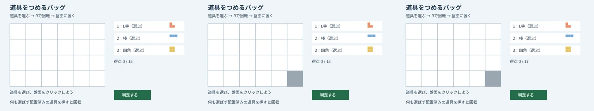

道具をつめるバッグの発展
道具を回転して置き、辺で接する組を考えます。
始める前に
ZIPを展開してできたフォルダーでindex.htmlを開きます。基本編の完成版から始めます。ZIPには基本編の3ファイルが入っています。
WindowsでZIPを展開する（動画）
作業用フォルダーのscript.jsを編集します。各ステップで保存し、index.htmlを再読み込みしてください。
クラスはデータと処理の設計図です。constructorはnewで作るときに呼ばれ、thisは作られた一つ一つのインスタンスを指します。
ステップ 1：使えないマスを置く
このステップの見本を図で見る
4===5 && 3===3 → false
このマスは使用可能
5===5 && 3===3 → true
このマスを含む道具は置けない
ゲーム画面とコードの前後を見る

このステップの見本
blocked(x, y) { return false; }
変わったコードの一例（script.js）blocked(x, y) { return x === 5 && y === 3; }
見本で確かめること
右下が灰色になり、そこに道具を置けません。
目標
右下のマスを使えなくします。
小作業を順に進め、確認欄で保存して動きを確かめます。
書く場所と置き換えるコード
使えないマスを設定する
作業用の script.js で次の範囲を探して置き換えます。
置き換える範囲
blocked(x, y) { return false; }
置き換えるコード
blocked(x, y) { return x === 5 && y === 3; }
横5・縦3のマスだけ true を返します。canPlace() はこのマスを含む配置を断ります。
保存後の確かめ方
保存してゲーム画面を更新する（動画）
index.html を再読み込みします。右下が灰色になり、そこに道具を置けません。 この段階の見本を開く
小さな練習
(5,3)を含む配置はできますか。
練習の答え
できません。
ステップ 2：相性のよい組を作る
このステップの見本を図で見る
3 + 0 = 3
通常の隣接は3点
3 + 2 = 5
相性がよいので5点
ゲーム画面とコードの前後を見る
このステップの見本
const extra = 0;
変わったコードの一例（script.js）const extra = (a.name === "L字" && b.name === "四角") || (a.name === "四角" && b.name === "L字") ? 2 : 0;
見本で確かめること
L字と四角が接すると組の点数が5と表示されます。
目標
L字と四角が接すると追加点を付けます。
小作業を順に進め、確認欄で保存して動きを確かめます。
書く場所と置き換えるコード
相性のよい組に2点を足す
作業用の script.js で次の範囲を探して置き換えます。
置き換える範囲
const extra = 0;
置き換えるコード
const extra = (a.name === "L字" && b.name === "四角") || (a.name === "四角" && b.name === "L字") ? 2 : 0;
L字と四角の組をどちらの順序でも調べ、一致なら2、それ以外は0です。隣接の3点に足して5点になります。
判定の目標を17点にする
作業用の script.js で次の範囲を探して置き換えます。
置き換える範囲
const target = 15;
置き換えるコード
const target = 17;
check() の目標を15から17に変えます。
画面の目標も17点にする
作業用の script.js で次の範囲を探して置き換えます。
置き換える範囲
const result = bag.calculate(), target = 15;
置き換えるコード
const result = bag.calculate(), target = 17;
表示する目標を判定と同じ17点にします。
保存後の確かめ方
L字と四角が接すると組の点数が5と表示されます。 この段階の見本を開く
小さな練習
L字と四角が接する1組は何点ですか。
練習の答え
3+2で5点です。
ステップ 3：複数の課題に挑戦する
このステップの見本を図で見る
14 >= [15,17,19][0] は false
配置を調整する
15 >= 15 && round<3
強化を選んで課題2へ
19 >= [15,17,19][2]; round===3
全課題クリア
ゲーム画面とコードの前後を見る
このステップの見本
const target = 17;
変わったコードの一例（script.js）const target = ([15, 17, 19][this.round - 1]);
見本で確かめること
最初の目標を達成すると強化の選択が表示されます。
目標
目標を達成しながら強化を選びます。
小作業を順に進め、確認欄で保存して動きを確かめます。
書く場所と置き換えるコード
課題ごとの目標を選ぶ
作業用の script.js で次の範囲を探して置き換えます。
置き換える範囲
const target = 17;
置き換えるコード
const target = ([15, 17, 19][this.round - 1]);
目標は15・17・19点です。round - 1 を配列の番号に使います。
達成後に強化か最終クリアを選ぶ
作業用の script.js で次の範囲を探して置き換えます。
置き換える範囲
this.state = "clear"; this.message = "クリア！";
置き換えるコード
if (this.round < 3) { this.state = "choice"; this.message = "達成！ 1: 道具点+1 / 2: 隣接点+1"; }
else { this.state = "clear"; this.message = "全課題クリア！"; }
3課題目より前なら強化選択の状態、3課題目なら全課題クリアにします。
強化を選んで次の課題へ進む
作業用の script.js で次の目印の直後に追加します。
目印
} else this.message = "まだ目標に届きません。配置を変えてみよう";
追加するコード
}
choose(key) {
if (this.state !== "choice" || (key !== "1" && key !== "2")) return;
if (key === "1") this.itemBonus++; else this.adjBonus++;
this.round++; this.state = "playing"; this.message = "次の目標に向けて配置を調整しよう";
選択中に1なら道具点、2なら隣接点を1増やします。課題番号を進め、配置を残したままプレイ中に戻します。
現在の目標点を表示する
作業用の script.js で次の範囲を探して置き換えます。
置き換える範囲
const result = bag.calculate(), target = 17;
置き換えるコード
const result = bag.calculate(), target = ([15, 17, 19][bag.round - 1]);
bag.round - 1 で、判定と同じ課題の目標を表示します。
強化選択中は選択だけ受け付ける
作業用の script.js で次の目印の直後に追加します。
目印
if (event.ctrlKey || event.altKey || event.metaKey || event.repeat) return;
追加するコード
if (bag.state === "choice") { bag.choose(event.key); return; }
choice 中は choose() にキーを渡し、他の操作をせずに終えます。
保存後の確かめ方
最初の目標を達成すると強化の選択が表示されます。 この段階の見本を開く
小さな練習
道具点を1増やすと1個あたり何点ですか。
練習の答え
基本の2点と合わせて3点です。